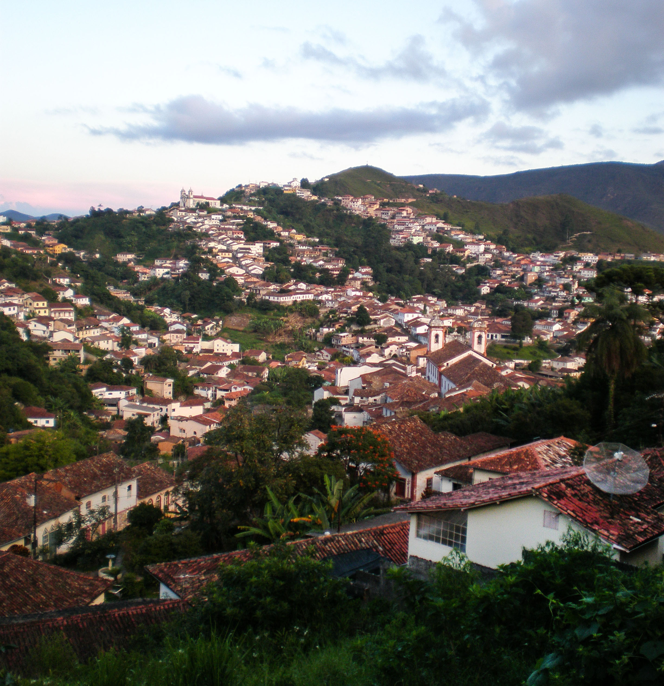
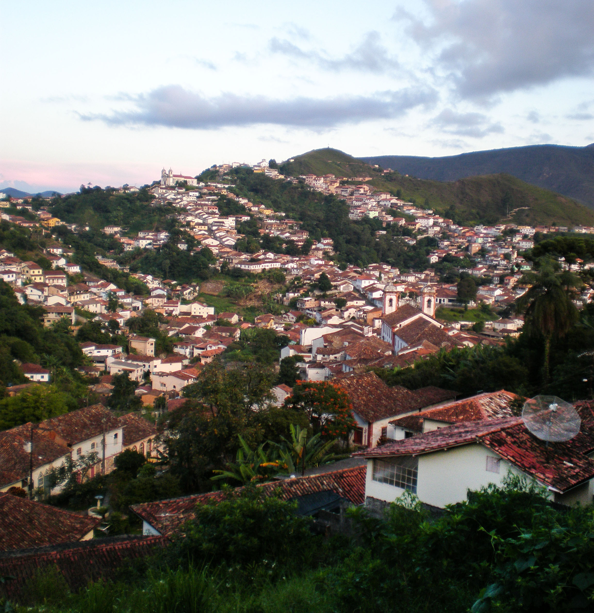

Hi, my name is Laura.
I’m a UX/UI designer based in Philadelphia. My background is in photography and 3D design in the cultural heritage field. I’m committed to using my industry knowledge and experiences abroad to create meaningful digital products that translate across a range of mediums and bring people together.
I am currently available for a full-time position or freelance opportunities. Also happy to relocate!
At 17 years old, I spent a year as an exchange student in a rural town in Brazil. The chance to learn the rules of a different culture was both thrilling and transformative.
Over the next decade, I traveled as much as I could, eager to step into someone else’s shoes. I like to observe, to listen to people and find out how things work.
The ability to step into someone’s shoes is what user experience design is all about.
What has made me a curious traveler is the same thing that makes me a successful UX designer - the ability to adapt to changing situations and listen to people’s needs in order to better serve them.
My encounters abroad drive me to create experiences that translate across a range of mediums and connect people from different cultural backgrounds.
 


I’ve held all sorts of jobs and titles in the design industry before finding UX design. I started my professional career as a photography assistant nine years ago, where I discovered I had an eye for symmetry, color and composition.
Soon after I worked my way into the cultural heritage field, eager to combine my love of history and visual design. I earned a master’s degree in international heritage visualization--a dynamic and growing field of digital heritage and 3D documentation.
Upon graduation, I had the opportunity to learn from some of the pioneers in the industry at the Digital Design Studio (DDS) at the Glasgow School of Art and their partner, Historic Environment Scotland. Alongside a talented team, I laser scanned historic structures, developed 3D models from real-world data and stitched together panoramic photographs of World Heritage sites for VR applications.
My work at the DDS trained me to assess a technical problem and solve it using a range of technologies and context-specific methods, essential skills that I routinely employ as a UX designer.

In 2017, I worked as a graphics specialist at a cultural resource management firm that conducts archaeological studies and historic architecture assessments. I spent my days photographing historic structures, mapping boundary lines in ArcGIS, and designing interpretive and wayfinding signs for clients.


It was during this period of my professional life that I realized that something was missing. Although it is immensely important to document cultural heritage to preserve our history, I no longer felt connected to people and their experiences.

And there it was. UX Design. I found myself back where I knew I belonged - surrounded by people and their stories. Only this time I have the tools to be more than just an active listener and more than just an observant traveler.
Now, by designing experiences that reflect the needs of my users, I can make a difference in how they view the world. That’s what I love most about UX design - its impact.
And yes, I know - it can go either way. Bad design can leave you feeling powerless and frustrated. It’s a huge responsibility. But if you get it right, the reward is unmatched - someone finding love, reconnecting with an old friend, getting home on time.
Small decisions make good design, and good design leads to big impacts. That’s what I’m committed to - intentional design that brings people together.

I’m usually hanging from a trapeze at my circus gym. I love podcasts (ask me which ones) and trying new recipes. I speak fluent Portuguese and am currently learning Polish.